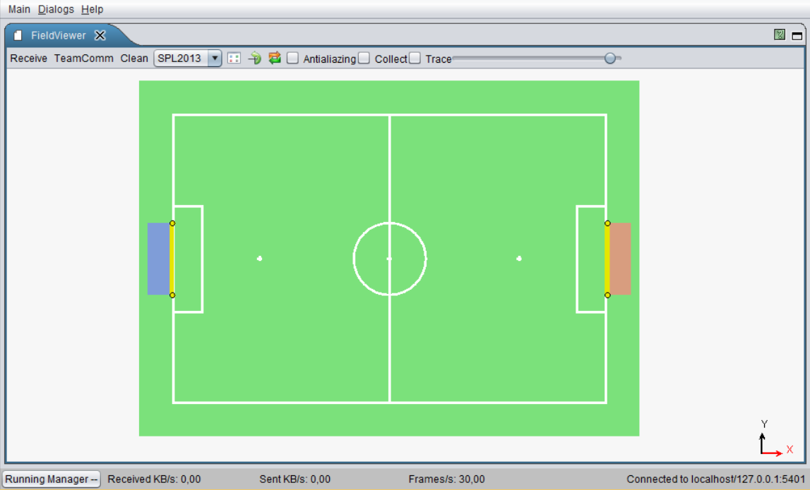
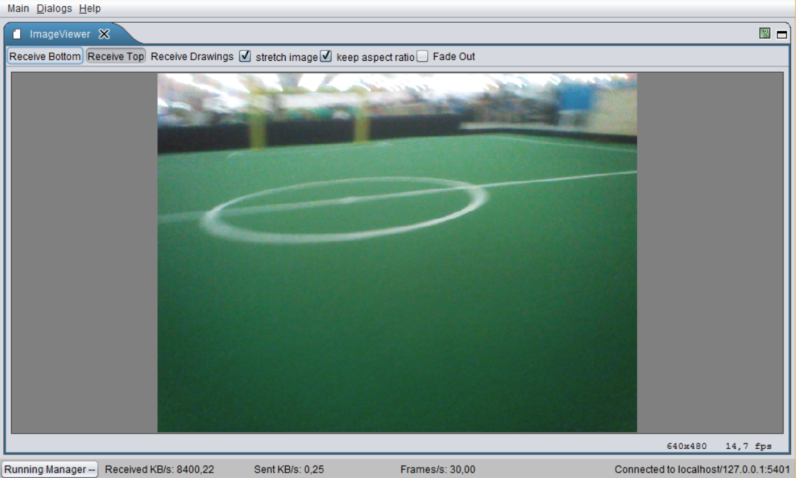
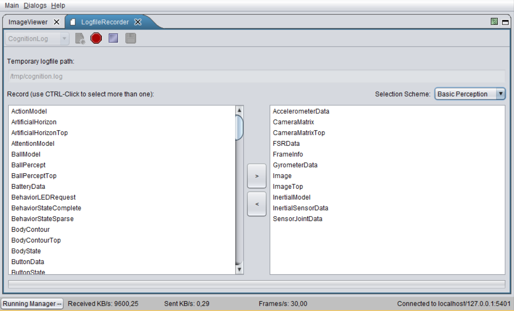
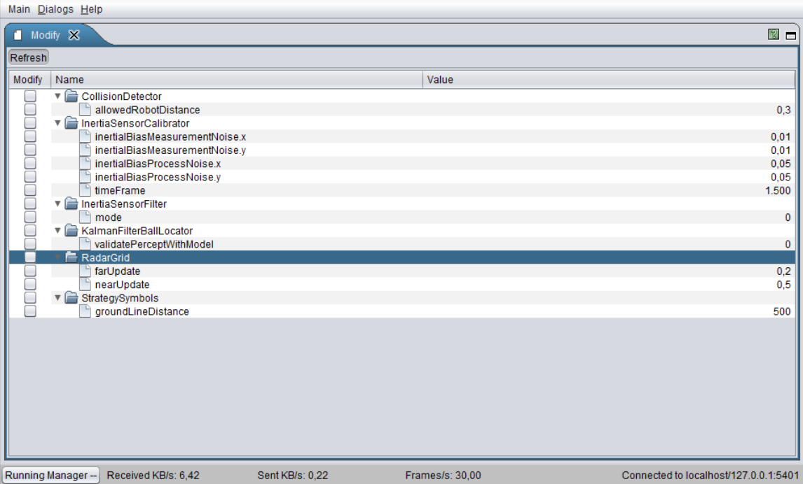
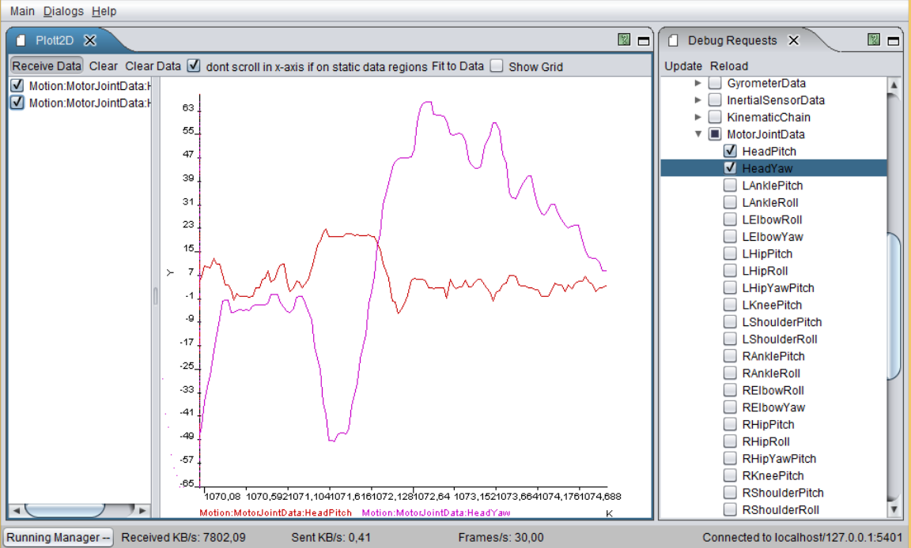
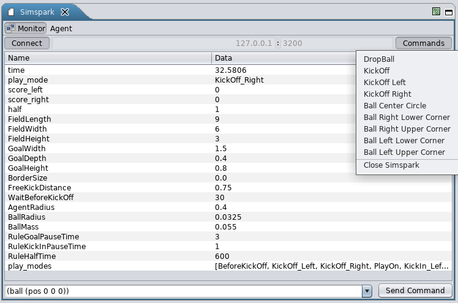
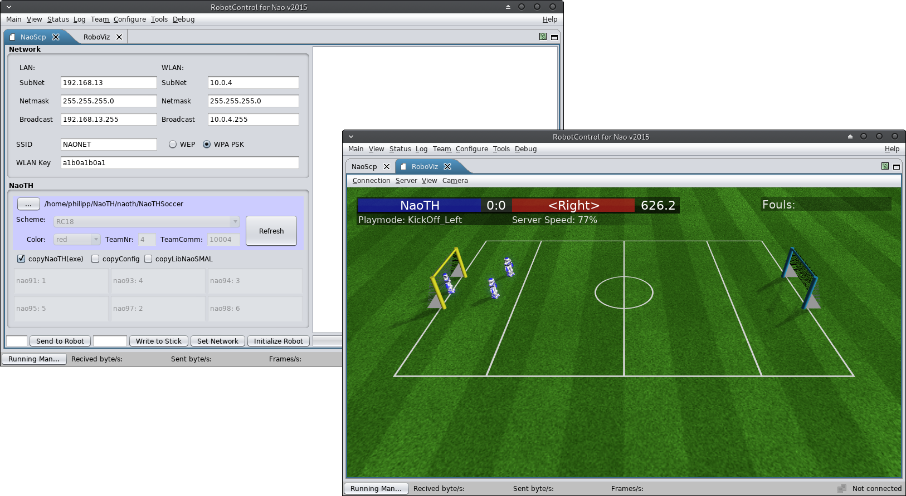
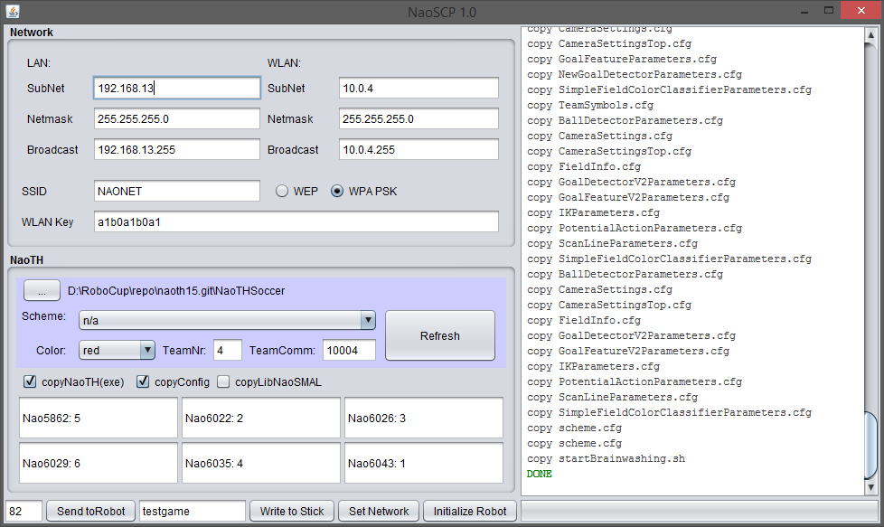
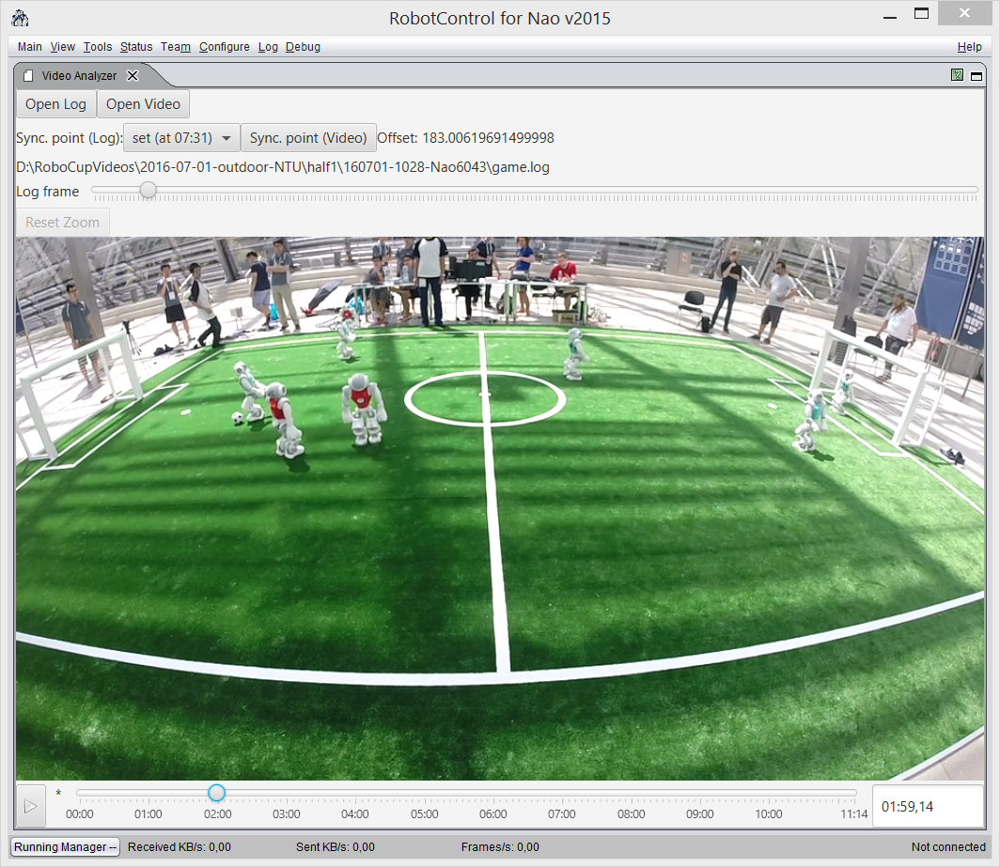

Debugging and Tools¶
In order to develop a complex software for a mobile robot, we require means for high-level debugging and monitoring (e. g., visualization of the robot's posture or its position on the field). Since we do not exactly know which kind of algorithms will be debugged, there are two aspects of high importance: accessibility at runtime and flexibility. The accessibility of the debug construct is realized based on our communication framework. Thus, they can be accessed at runtime by using visualization software like RobotControl, as shown in Figure 3.1{reference-type="ref" reference="fig:robotcontrol"}.
Concepts¶
Some of the ideas were evolved from the GT-Architecture [@2007:RoboCup-TDP-GermanTeam]. The following list illustrates some of the debug concepts:
debug request: (activates/deactivates code parts),
modify: allows modification of a value (in particular local variables)
stopwatch: measures the execution time
parameter list: allows to monitor and modify lists of parameters
drawings: allows visualization in 2D/3D; thereby it can be drawn into the image or on the field (2D/3D)
plot: allows visualization of values over time
As already mentioned, these concepts can be placed at any position in the code and can be accessed at runtime. Similar to the module architecture, the debug concepts are hidden by macros to allow simple usage and to be able to deactivate the debug code at compilation time, if necessary.
In order to use a debug request in the code you have to register it once
with the DEBUG_REQUEST_REGISTER macro:
DEBUG_REQUEST_REGISTER("My:Debug:Request", "Description of the debug request", true);
After that, you can use the DEBUG_REQUEST macro to wrap code that
should be only executed when the debug request is active.
DEBUG_REQUEST("My:Debug:Request",
std::cout << "This code is not executed normally" << std::endl;
++c;
);
MODIFY works in a similar way, but does not need any registration. By,
for example, wrapping a variable and defining an identifier, this
variable can be changed later from RobotControl.
double yaw = 0;
MODIFY("BasicTestBehavior:head:headYaw_deg",yaw);
In addition to these means for individual debugging, there are some more for general monitoring purposes: the whole content of the blackboard, the dependencies between the modules and representations, and execution times of each single module. The Figure 3.1{reference-type="ref" reference="fig:robotcontrol"} illustrates visualizations of the debug concepts. In particular a field view, 3D view, behavior tree, plot and the table of debug requests are shown.
RobotControl¶
The various debugging possibilities are organized in different dialogs. In this year we started to update the UI by switching to JavaFX for some dialogs. The following list consists of our most used RobotControl Dialogs.

Behavior Viewer¶

Debug Requests¶

Field Viewer¶

There are views for different field sizes and a local view. Certain debug requests draw on these views. For example, you could draw the robots' positions on the field by activating the corresponding debug request.
Image Viewer¶

Can show the top and bottom images. There are debug requests that draw on the camera images, if they are active.
Logfile Recorder¶

Records a log file on a robot with manually selected representations.
Modify¶

The Modify macro allows changing values of variables declared within this macro at runtime.
Module Configuration Viewer¶

Shows which modules are currently (de-)activated. Also indicates, which other modules are required (left) and provided (right) by each module.
Parameter Panel¶

Shows parameters defined in our configuration files. It is possible to change the values at runtime. The variables must be registered as parameters in the code.
Plot 2D¶

Shows plots activated by plot debug requests.
Representation Inspector¶

Shows the data that is written to the blackboard by each representation.
Stopwatch Viewer¶

Shows the execution time for each module.
Team Communication Viewer¶

Shows all connected robots and possible all of their provided status information via TeamComm (e.g. ip address, battery charge, temperature, etc.). This dialog is mainly used during competitions to get a quick overview of the robots health status, their communicated data (e.g. ball, whistle detection, etc.) and their role decisions. Positions of the robots, role decision and seen ball for each robot are visualized in the FieldViewer [rc:fieldviewer]{reference-type="ref" reference="rc:fieldviewer"}. It's also useful for debugging the team communication to get a general overview of the role decision and its transitions. This year, the dialog was re-implemented using JavaFX.
Team Communication Logviewer¶

The Team Communication Logviewer allows to re-play team communication logfiles previously recorded with the Team Communication Viewer. It's also able to re-play logs from the GameController and export them as JSON.
Simspark¶

This dialog shows the state of the connected simspark instance. It also provides some predefined commands and a textfield for user-defined commands to send to simspark. Furthermore it also provides the teamcommunication of the simulated robots for other dialogs in RobotControl (e.g. Team Communication Viewer).
External Tools¶

Some "external tools" where modified in order to load them into RobotControl via reflection. Its convenient to have all needed tools in the application we're using most. Currently we have the NaoSCP tool (see 3.3.2 NaoSCP), for the setup & deployment of a robot, and a modified version of RoboViz, for visualization of a SimSpark simulation, integrated in RobotControl.
Robot Setup and Deployment¶
In this section we give an overview over our deployment and robot setup procedure. Changing the configuration of the robot, e.g., deployment of the binary, network setup etc., is a critical point during both, development and competition. To minimize the chance of error we developed a set of procedures and tools.
Deployment Procedure¶
Currently we have two different deployment procedures:
-
deployment via usb flash drive
-
deployment via network
The general procedure consists of two steps:
-
assemble deployment directory containing all files and configurations to be deployed as well as a corresponding deployment shell script;
-
copy this directory to the robot and run the deployment script;
This division minimizes the chance of mistakes and allows for easier debugging, i.e., if something went wrong, the error is either in the locally assembled deployment directory or has occurred during the deployment on the robot - both can be inspected separately. At the same time this locally assembled deployment directory serves as a binary backup, which can be very useful during the competition, e.g., if something turned out to be wrong with the new version just before the game and one needs to switch back to the binary from the last game.
The beginning and the end of the deployment procedure are indicated by different sounds. This way the state of the robot and the progress of the deployment can be easily monitored, this is especially helpful when setting up a whole team before a game.
NaoSCP¶
NaoSCP is a setup and deployment tool. It primarily has three tasks: (1) initialize a new robot, e.g., copy libraries and scripts, (2) set the network configuration and (3) deploy naoth binary and configurations to the robot. All these tasks can be done on a command line as well, the main aims for designing NaoSCP were simplification of the deployment process, ensured backup of deployed binaries and reduction of the chance of mistakes during setup in critical situations, e.g., before a game at the world championship.
 NaoSCP user interface. The log panel on the right displays status of the deployment process. The left side contains the panels for the configuration of the deployment / setup process: Network configures the network setup; NaoTH is used to adjust the configuration relevant for the deployed binary, e.g., player numbers. The buttons in the left bottom tool bar trigger particular deployment and setup actions like writing the network configuration to the robot or copying a new binary to a deployment USB flash drive.
Usage Remarks¶
The following describes the particular components of the NaoSCP user interface as illustrated in the Figure 3.2.
Log Window
(right) shows information regarding the progress of the deployment process, e.g., copied files, connection errors and such.
Network
configuration (top left) is used to setup the LAN and WLAN;
NaoTH
dialog (left) configures the deployment of the game binary and contains things like the path to the source where the binaries can be found, used configuration scheme and player numbers for each robot based on their IP address;
Action toolbar
(bottom left) contains the buttons for the four different deployment / setup actions: Send to Robot deploys the complied code and configuration to a particular robot via network. The text field left of the button defines the last byte of the ip address of the target robot. The network configuration from the dialog Network is used to determine the complete address. In this particular example the LAN target address would be 192.168.13.82. Thereby LAN is tried first and in case of failure WLAN is tried; Write to stick writes the deployment directory to a USB flash drive. If the flash drive already contains a deployment directory, a backup version of it is created. The text field left to the button holds an optional tag, which is used to organize the backups on the flash drive; Set Network configures the robots network according the the settings in the dialog Network; Initialize Robot will initialize a new robot, e.g., after a factory reset. This action will copy additional libs, configure the NaoQi modules, necessary starting scripts for binaries and for automatic mounting and running of USB flash drives. Additionally the network is configured and the binary is deployed like previously described;
USB flash drive¶
A deployment flash drive can be created manually or (as described above) via the NaoSCP tool. As the minimum requirement there should be an executable shell script named \"'startBrainwashing.sh\"'. When the flash drive with a shell script (and a deployment directory) is connected to the robot, it is mounted automatically to a defined directory and the setup script is executed. The script is responsible for copying the particular binary and/or configuration files. The begin and end of the deployment procedure are indicated by different sounds. This way is preferred when deploying software on several robots, e.g., setting up a team before a game.
Flash drive variants¶
Currently we have different kinds of USB flash drives to accomplish different kinds of deployment or collection tasks.
Deploying¶
As described above the deployment flash drive is used to copy new binaries and/or configuration files to the robot.
Collecting log files¶
The \"'collect log files\"' flash drive is used to copy the recorded log file from the robot. This is primarily used after games to be able to analyze possible misbehavior of the robot. Otherwise, if the robot is shut down, the log files would be lost since we record the logfiles in main memory. In addition some informations about the robot and the currently executed binary are collected and written to the \"'nao.info\"' file. With that information we're documenting the state of the robot/binary of the log file and giving a quick overview on later log file examination. Finally we're collecting all \"'heard\"' whistles for later fine-tuning of our whistledetector.
Setting network¶
The network flash drive is used to set the network configuration of the robot (like IP address, etc.). Especially for the Wi-Fi configuration this method is useful to quickly set up all need robots before a game.
Logging¶
Analysis and evaluation of the algorithms running on the robot is a big challenge.
Our team has a long history in logging (our logs from 2010 are still readable and useful). Through the years we developed a comprehensive infrastructure for recording log files on individual robots during the games as well as tools for synchronizing these log files with videos of the game and analyzing them.
A log file is recorded by a robot in its local file system, and is collected later through network or USB (cf. Section 3.3.3{reference-type="ref" reference="s:usb_stick"}). Currently we use two different modes for recording such log files - automatic game log and log of manually selected representations.
The game log is only recorded when the robot is in a playing state. It is recorded with the cognition pace, i.e., each time a new image arrives (each 33ms), and contains mainly the behavior state as well as additional information needed in a particular situation. For example during the RoboCup 2016 we recorded the best four ball candidate patches from each image in each frame to create a database of realistic samples for ball detection (cf. Section 4.8.2.1{reference-type="ref" reference="s:ball:sample_generation"}). The game logs recorded by individual robots can be synchronized with the video of the game, which can be very useful to analyze and find bugs in the behavior patterns of the robot and ultimately in the team behavior.
Figure 3.3{reference-type="ref" reference="f:synchronisation_interface"} illustrates the manual synchronization interface. To simplify the synchronization procedure changes in the game state, e.g., from ready to play, are automatically extracted from the log file. The operator can select a suitable event from a drop-down list. To synchronize both, the operator then needs to find the corresponding time in the video. Good events for synchronization are often changes from init to ready - in the video one can clearly see when the robots receive the signal from the game controller and start to move.
The manual logs can be configured and triggered through the according control dialog in the RobotControl as shown in the Section 3.2{reference-type="ref" reference="s:robotcontrol"}. This is used to record specific data for debugging or analysis in isolated experiments. A good example are log files containing full images of particular situations for general image processing, which can be only recorded for a short period of time due to the large size.
 Synchronization Interface for individual log files and videos of a game.
Logfile Format¶
As described in the Section 2.3{reference-type="ref" reference="s:module_framework"} the state of the robot is stored in representations on the blackboard. Any of these representations can be recorded to a log file if it has a designated serializer as described in Section 2.4{reference-type="ref" reference="s:serialization"}. The format by which the representations are stored in a logfile is pretty straight forward. Each representation is stored in a package of the following form:
<frame number><representation name><size><data>
Where <frame number> is 4 byte long, <representation name> is a
string terminated with a zero character '\0' and <size> is 4 bit
long length of the following binary <data>. A logfile is simply a
sequence of such packages. Important to note is that when several
different representations are recorded in each frame they are written in
the same way, so the final log looks something like this:
1 FrameInfo ...
1 ImageTop ...
1 CameraMatrix ...
2 FrameInfo ...
2 ImageTop ...
2 CameraMatrix ...
...
Annotate and Evaluate Logs¶
Annotation interface was created and used to annotate different kick
actions executed by our robots in the videos recorded during the games
at the RoboCup in 2015. The kick events were automatically extracted
from the log files recorded by the individual robots and aligned with
the video. Thus the human annotator can simply click through the
particular events and inspect them in a short time. The results were
used to evaluate the performance of the kick decision algorithm and were
published in [@RC-MellmannSchlotterBlum-16]. illustrates an example of a
labeling session for the first half of the game with the team
NaoDevils at the RoboCup 2015. The following two links lead to an
online demo and to the public repository with the code of the labeling
interface:
https://www2.informatik.hu-berlin.de/~naoth/videolabeling/index.php
https://github.com/BerlinUnited/VideoLogLabeling
 Labeling interface used to annotate kick events regarding their
quality. At the bottom are time lines for each of the robots. Different
actions are represented by buttons on the time line with different
colors. On the right the robots estimated state is visualized, i.e.,
estimation of its position, ball model and obstacles. On the left are
three categories of binary labels describing the quality of the
action.
Labeling interface used to annotate kick events regarding their
quality. At the bottom are time lines for each of the robots. Different
actions are represented by buttons on the time line with different
colors. On the right the robots estimated state is visualized, i.e.,
estimation of its position, ball model and obstacles. On the left are
three categories of binary labels describing the quality of the
action.
Simulation¶
As a common experience, there are big gaps between simulation and reality in robotics, especially with regards to basic physics with consequences for low level skills in motion and perception. There are some researchers who have already tried to narrow this gap, but there are only few successful results so far. We investigate the relationships and possibilities for methods and code transferring. Consequences can lead to better simulation tools, especially in the 3D Simulation League. At the moment, we use the SimSpark simulator from the 3D Simulation League with the common core of our program, see Figure 3.6{reference-type="ref" reference="fig:spl-and-sim"}. As already stated, therewith, we want to foster the cooperation between the two leagues and to improve both of them.
 NAO robots run in Standard Platform League (left) and 3D Simulation
League (right).
NAO robots run in Standard Platform League (left) and 3D Simulation
League (right).
When compared to real Nao robots, some devices are missing in the SimSpark, such as LEDs and sound speakers. On one hand, we extended the standard version of SimSpark by adding missing devices like camera, accelerometer, to simulate the real robot. On the other hand, we can use a virtual vision sensor which is used in 3D simulation league instead of our image processing module. This allows us to perform isolated experiments on low level (e. g., image processing) and also on high level (e. g., team behavior). Also we developed a common architecture [@Mellmann2010b], and published a simple framework allowing for an easy start in the Simulation 3D league.
Our plan is to analyze data from sensors/actuators in simulation and from real robots at first and then to apply machine learning methods to improve the available model or build a good implicit model from the data of real robot. Particularly, we plan to:
-
improve the simulated model of the robot in SimSpark,
-
publish the architecture and a version of SimSpark which can be used for simulation in SPL,
-
transfer results from simulation to the real robot (e. g., team behavior, navigation with potential field).
So far, we have developed walking gaits through evolutionary techniques in a simulated environment [@rc-07-hein_et_al; @diplom-hein]. Reinforcement Learning was used for the development of dribbling skills in the 2D simulation [@Uc-Cetina09thesis], while Case Based Reasoning was used for strategic behavior [@BurkhardBerger07Cases; @berger-laemmel-wall-pass]. BDI-techniques have been investigated for behavior control, e. g., in [@diplom-berger; @hdb-bound-rat].